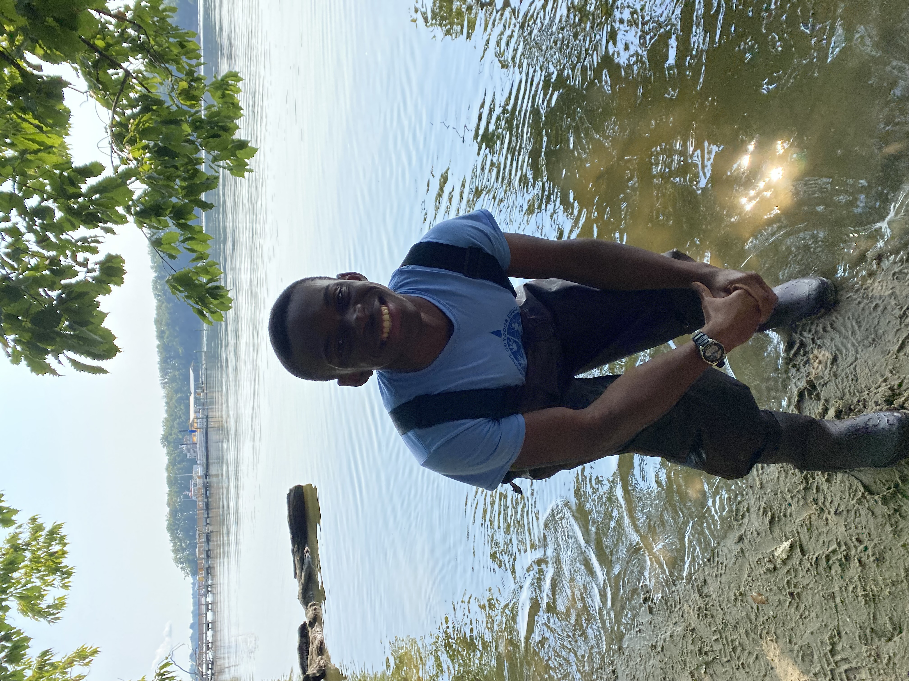

Me in waders while on my first SGC excursion
Me in waders while on my first SGC excursion
As one of my required excursion trips of the semester, I decided to sign-up for a trip to the Smithsonian Environmental Research Center. The first activity that we did was sample various water life species and classify them in four categories: hoppers, swimmers, sitters, and fliers. But to actually classify them, we had to capture them. So, I got the opportunity to fish, which required us to actually go into the waters which was thrilling!